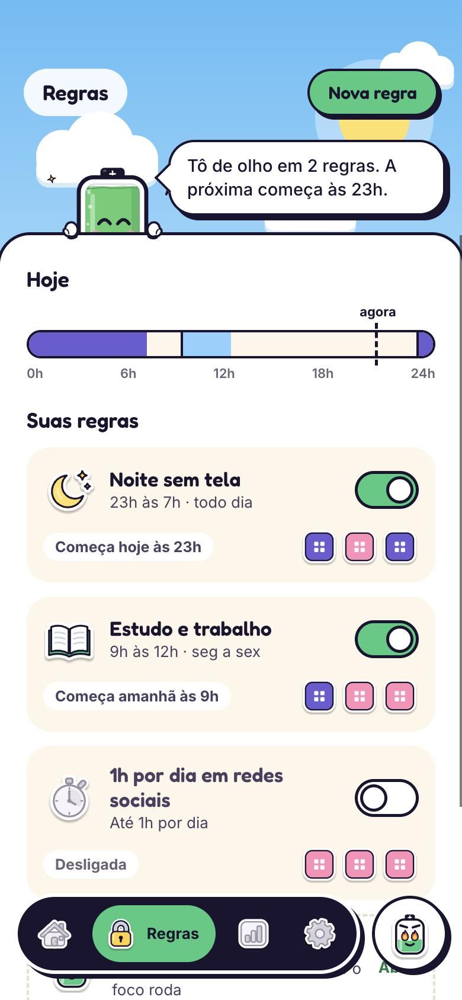
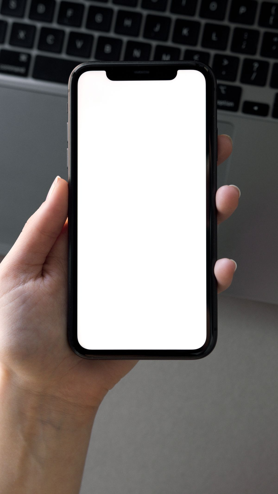
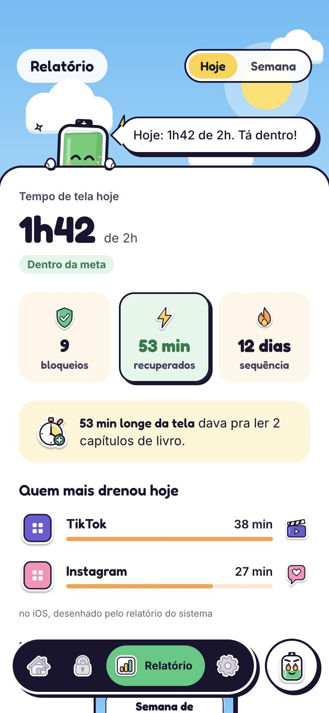
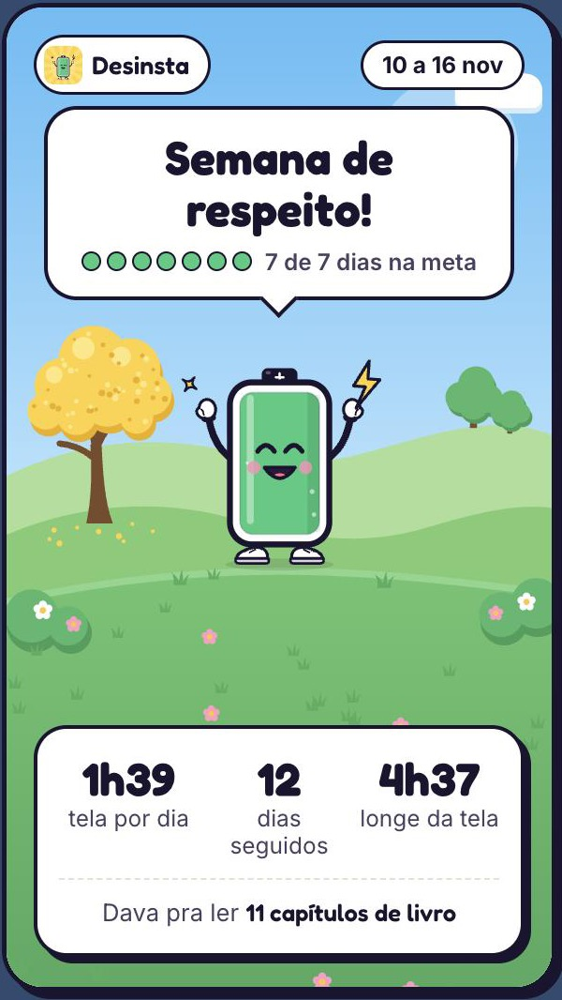

Regras com horário
Noite sem tela, estudo e trabalho, 1 hora por dia nas redes. Liga e desliga quando quiser.

Em breve no iPhone e no Android
O desINSTA transforma seu tempo de tela numa Bateria: o feed descarrega, a vida fora dele recarrega.
Em breve no iPhone e no Android, com 3 dias grátis.

Como funciona
Ela mostra como anda a sua cabeça, de 0 a 100%. Role a página para ver o que o feed faz com ela.
Você abre o feed por um minuto. Um vídeo puxa o outro, e a carga começa a cair.
O feed foi feito para não ter fim. A sua carga, não.
Já passou da meia-noite e a carga está no fim. Parece familiar?
Em 2023, o brasileiro passava em média 5h19 por dia na internet pelo celular.
Fonte: Statista, com dados da DataReportal.
Com o desINSTA
Na hora da sua regra, a Bateria entra no lugar do feed. Desistiu de abrir? Ganha carga.
+2% a cada desistência
Escolha quanto tempo quer longe da tela. Os apps que mais te prendem ficam travados até o fim.
+1% a cada 5 min de foco
Fechou o dia dentro da sua meta de tempo de tela? A carga sobe e a sequência ganha mais um dia.
+10% no dia dentro da meta
Sem sermão e sem culpa: a Bateria mostra como você está, e você decide o que fazer.
O que fazer com o tempo de voltaTempo de volta
Em média, quem usa internet no Brasil passa 5h19 por dia no celular. Se metade voltasse pra você, seriam 2h40 todo dia. Dá pra:
5h19 por dia: Statista, com dados da DataReportal (2023).
Recursos
Você monta as regras. A Bateria segura as pontas.
Noite sem tela, estudo e trabalho, 1 hora por dia nas redes. Liga e desliga quando quiser.

Tempo de tela contra a meta, quem mais drenou e quanto tempo você recuperou.

Veja a carga sem abrir o app e comece um foco com um toque.
Cada dia na meta soma um. Uma vez por semana, um congelamento salva o dia difícil.
Um cartão pronto para os stories, com os números da sua semana.

Quais apps você usa e por quanto tempo ficam só no seu aparelho.
Dúvidas
O iPhone vem primeiro: o app está a caminho da App Store. O Android chega logo depois.
Sim. No iPhone, a partir do iOS 17. No Android, a partir do Android 10.
Você escolhe os apps e as regras. Na hora da regra, quem abre o app vê a Bateria primeiro. No iPhone, quem bloqueia é o próprio sistema, pelo Tempo de Uso. No Android, o desINSTA aparece por cima do app.
É a sua bateria mental, de 0 a 100%. Tempo longe da tela recarrega, rolar o feed descarrega, e o foco recarrega mais rápido.
Dá. Na tela de bloqueio, escolha 5 ou 15 minutos. Custa um pouco de carga, e você vê quanto antes de liberar.
Cada dia dentro da meta de tempo de tela soma um dia. Se um dia passar da meta, um congelamento por semana salva a sequência sozinho.
São 3 dias com tudo liberado. A gente avisa 2 dias antes da cobrança. Cancelou antes, não paga nada.
Os de uso, não: quais apps você usa e por quanto tempo ficam só no aparelho. Saem só os dados técnicos dos erros, algumas etapas (como o começo do teste grátis) e a assinatura, sem o seu nome. Está tudo na política de privacidade.
3 dias grátis
Baixe o desINSTA, escolha os apps que mais te prendem e veja a sua Bateria subir. Os 3 primeiros dias são por nossa conta.
Dúvidas ou sugestões? Fale com a gente.